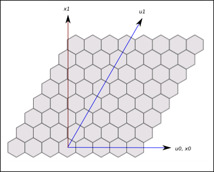

We want an easy conversion from hex-space to square-space, so we can convert
a mouse click to a hex, and a hex to x-y coordinates.
See this paper: http://www.math.ucsd.edu/~nslingle/bases.pdf
x0, x1 will be the usual Cartesian base vectors (instead of x and y).
u0, u1 will the hex-space base vectors.
Figure 1: C:\Users\John\workspace\HexGrid2\src\com\how_hard_can_it_be\hexgrid\doc-files\hex-grid-2.png

Transformation from u-space to x-space (hex-space to square-space), given that base vectors u0, u1 are expressed in
square-space coordinates.
| (%i49) | M : matrix( [u0[0], u1[0]], [u0[1],u1[1]]); |
Given some point p, expressed as a vector [p_u[0], p_u[1]], in hex-space coordinates:
| (%i50) |
kill(p_u)$ p_u: [p_u[0],p_u[1]]; |
Not sure why (or if) the following is any different:
| (%i52) |
kill(p_u); p_u: [arraymake(p_u,[0]),arraymake(p_u,[1])]; |
The same point in square-space coordinates is:
| (%i54) | p_x: M . p_u; |
One would think that inverting M and applying it to p_x would take us back to hex-space.
| (%i55) | M_inv: invert(M); |
| (%i56) | M_inv . M; |
| (%i57) | M . M_inv; |
(Maybe we need to tell Maxima to make some assumptions about the u vectors, like they span hex-space.)
| (%i58) |
declare (q,nonscalar)$ M . q; |
| (%i60) | at(M_inv . M, [u0 = [1,1], u1=[-1,1]]); |
| (%i61) | u0; |
| (%i62) |
u0=[1,1]; u1=[-1,1]; |
| (%i64) | M; |
| (%i68) | M_inv . M; |
Seems like it should have been the identity matrix.